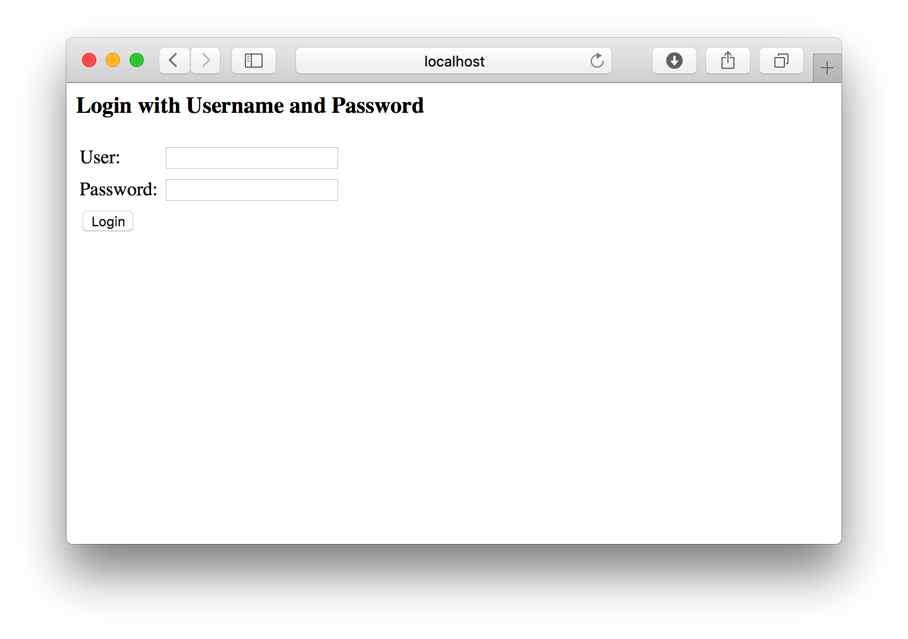
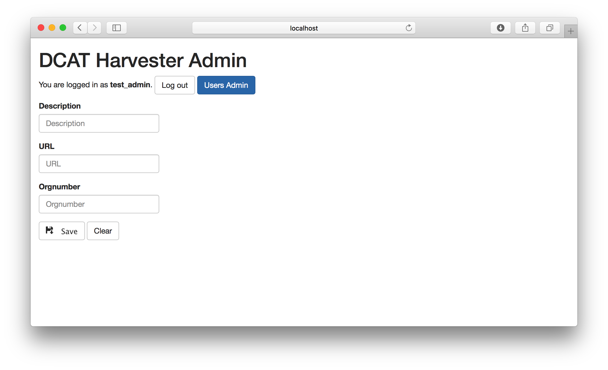
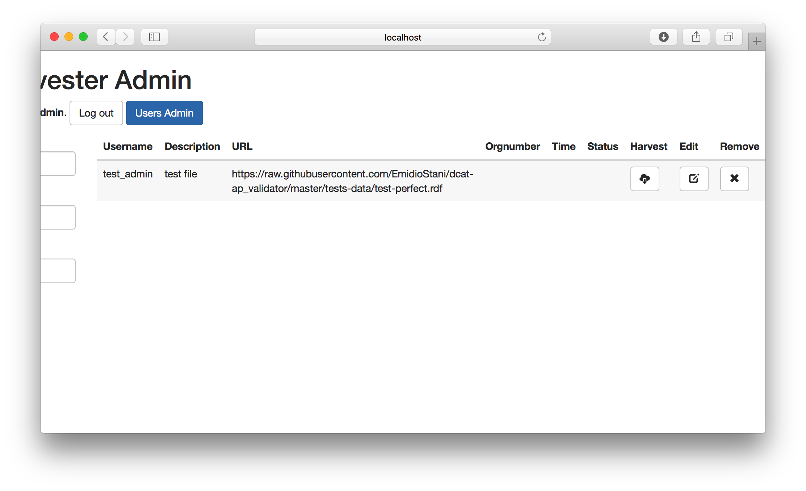
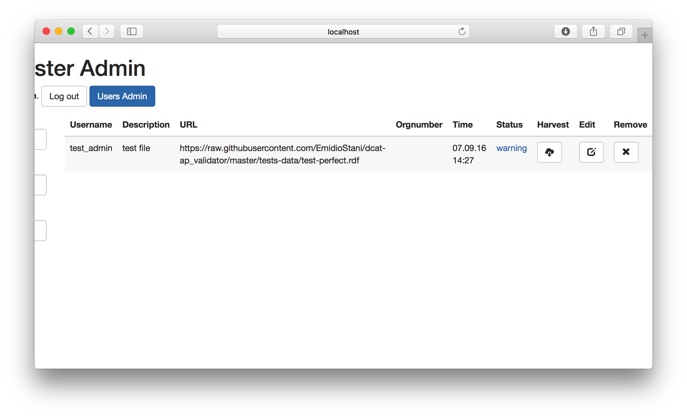
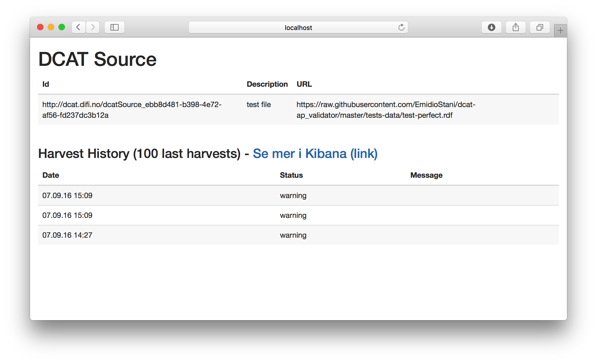
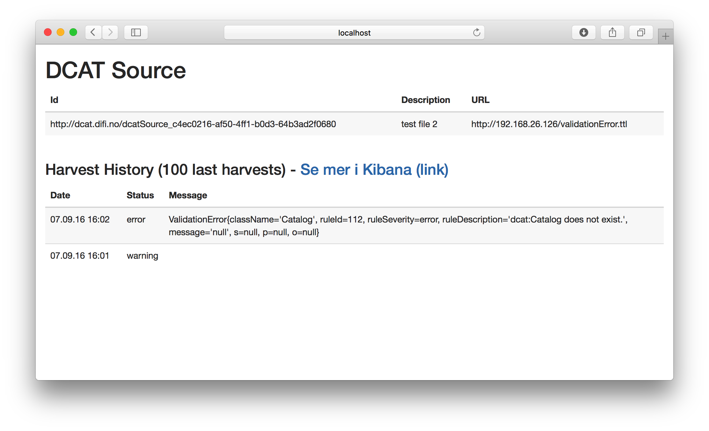
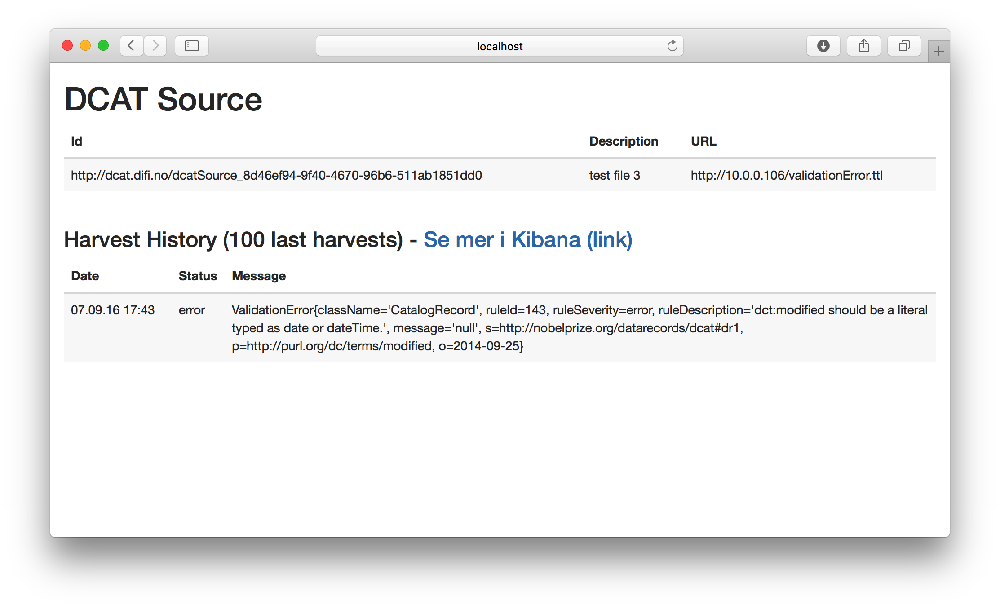
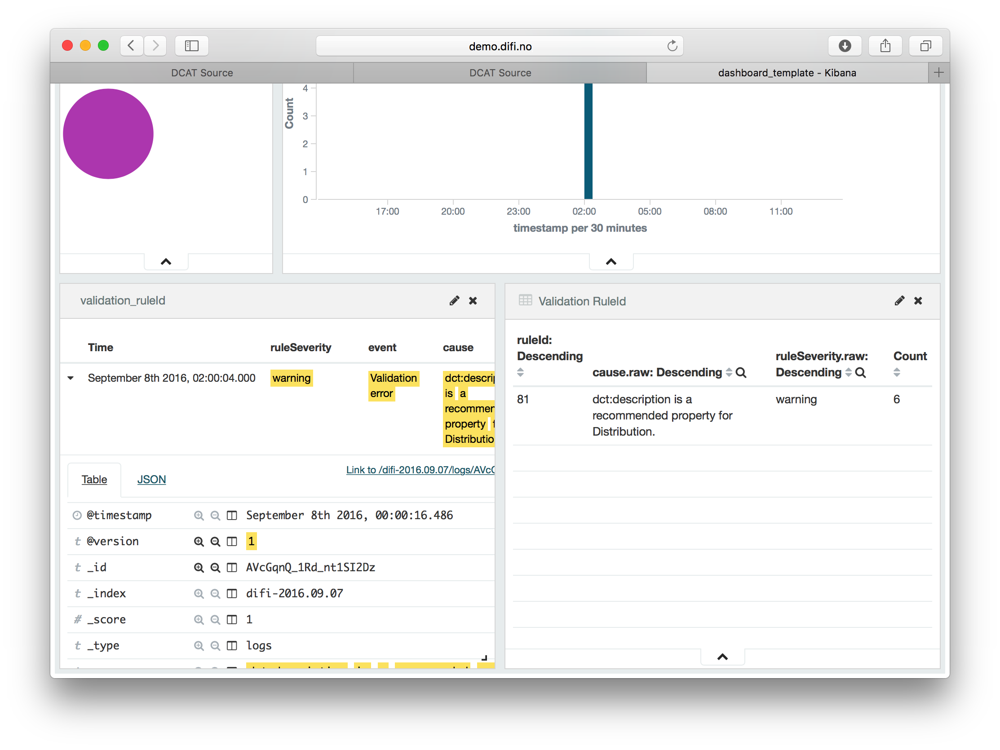
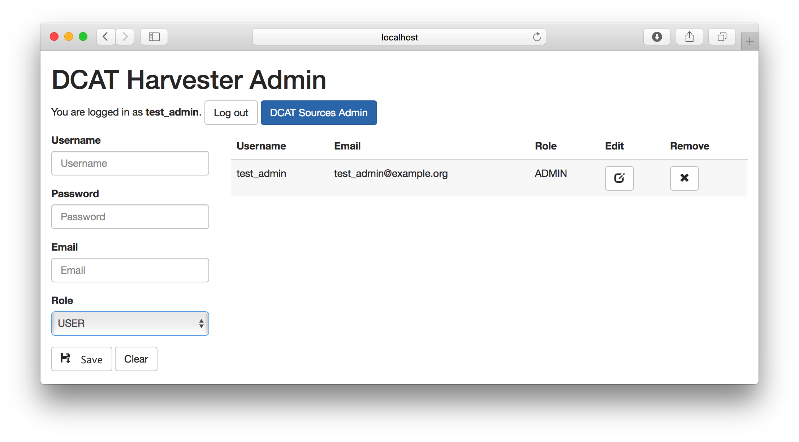

Login
If this is the first time you fire up the system, you should go to http://localhost:8080/dcat-admin-webapp/login in order to login
The default username and password are:
| Username: | test_admin |
| Password: | password |
If you were provided with your own username and password, please use those instead.
Add data source
When you have logged into you account you will be presented with a form to add new data source and a list of your current data sources. Do not worry if you do not see the "Users admin" button, it just means you are not an admin of the system.
To add your first data source you will need to know the URL to that data source. I'm going to use a the following test file https://raw.githubusercontent.com/EmidioStani/dcat-ap_validator/master/tests-data/test-perfect.rdf
Copy the link to your DCAT file (the URL) into the URL field, add a description and an organisation number if you have one. Then click on "Save".
Your data source has now been added to the system. To harvest your data source, just click on the harvest button. After harvesting please wait a few seconds and then refresh the page to see if the harvest was successful.
This harvest was successful. If it was unsuccessful the status would say "error". The current status "warning" just means that there is potentially more information that could be added to your DCAT file according to the standard.
Monitor harvest status
Your DCAT sources, together with information about when they were last harvested and what the status of that harvest was.
There are multiple possible statuses that your harvest can have:
| Status | Description |
|---|---|
| ok | Everything was ok. |
| warning | Your data is correct, but could be even better. |
| error | There was an error either validating your data or for some other reason. |
| syntaxError | Your syntax is wrong. |
| networkError | The harvester could not download the file specified in the URL. |
By clicking on the status you can get a more detailed view of the harvest history and more information about the status.
Understanding errors
There most common errors are validation errors and syntax errors. Information about the error is available by clicking on the status text for a particular data source.
Validation error
Validation errors have a message with the text "ValidationError...". These errors are generated when validating your data against our validation rules.
The above validation error is due to the data is missing a resource of type dcat:Catalog.
ValidationError{
className='Catalog',
ruleId=112,
ruleSeverity=error,
ruleDescription='dcat:Catalog does not exist.',
message='null',
s=null,
p=null,
o=null
}
Some errors will have more details, like the one below.

ValidationError{
className='CatalogRecord',
ruleId=143,
ruleSeverity=error,
ruleDescription='dct:modified should be a literal typed as date or dateTime.',
message='null',
s=http://nobelprize.org/datarecords/dcat#dr1,
p=http://purl.org/dc/terms/modified,
o=2014-09-25
}
Explaining that the "o" (as in the object in the triple: subject predicate object), which is the string "2014-09-25", is the wrong type and should be one of either date or dateTime.
Errors in Kibana
The history view of the DCAT source will not show every error message, and doesn't show any of the warnings. To see these you have to click on the "Se mer i Kibanan" link.
The overview on the bottom right gives a list of all the broken rules, with a count for each rules showing how many times it was broken. On the bottom left is the detailed view were you can explore a single instance of such a broken rule.
By clicking on a rule on the right, the entire view will filter based on that rules. On the left it is now possible to expand an event to look at the cause of that event.
User management
After loggin in with an admin user, click on the blue "Users Admin" button to get to the admin page.
Create a user
To create a user, simply fill in the form on the left. There are two roles to choose from.
| Role | Description |
|---|---|
| USER |
|
| ADMIN |
|
After filling in the form, press the save button to add the user to the system.
Edit a user
To edit a user, click the edit button next to the user. The form on the left will now show the user's information.

You can now change everything expect for the username and click "Save" to save the changes.
Delete a user
To delete a user, click to "x" next to the user. A user can only be deleted if all their registered sources are deleted first.